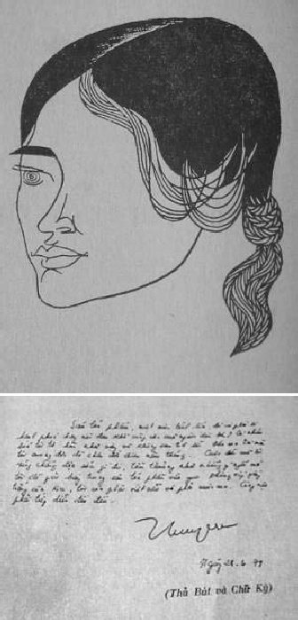

Bút hiệu: Nguyễn Thị Thuỵ Vũ. Sinh ngày: 19-8-1937 tại Vĩnh Long. Viết văn từ năm 1965.

.Tác phẩm: Mèo đêm, tập truyện, nhà xuất bản Kim Anh 1966, Hiện Đại tái bản 1968; Lao vào lửa, tập truyện, nhà xuất bản Kim Anh 1967; Chiều mênh mông, tập truyện, nhà xuất bản Kim Anh 1968; Ngọn pháo bông, truyện dài, nhà xuất bản Hiện Đại 1968; Thú hoang, truyện dài, nhà xuất bản Hồng Đức 1968; Khung rêu, truyện dài, nhà xuất bản Kẻ Sĩ 1969 (Giải nhì Văn chương toàn quốc 1970). Đã cộng tác với: Bách Khoa, Tiểu Thuyết Thứ Năm, Vấn Đề, Khởi Hành, Hoa Tình Thương, Tin Sáng, Tiếng Nói Dân Chủ, Đời, Lập Trường, Dân Chủ Mới, Dân Ý, Ánh Sáng, Tin Mật, Tiến Bộ…
Nguyễn Thị Thuỵ Vũ và những cánh thiêu thân
Nguyễn Thị Thuỵ Vũ, nhà văn phái nữ, hiện diện giữa khung trời văn nghệ với một sắc thái đặc thù. Những ý nghĩ bỏng cháy và giãy giụa về thân xác trong mỗi tác phẩm, đôi khi vượt quá ý nghĩ của nhiều người. Thuỵ Vũ mới ngoài ba mươi tuổi đời, tuổi nghề vừa lên 6 (1971), nhưng tự tạo cho riêng mình một thế đứng, một cương vị trong nền văn học Việt Nam hiện đại. Người ta đã hỏi nhau, bàn tán, phê bình về bút pháp cũng như nội dung mỗi truyện của Thuỵ Vũ, vì nó không nằm trong khuôn nếp thông thường của một nữ nhi, nó đã bay ra ngoài quỹ đạo dự tưởng.
Người ta còn băn khoăn, thắc mắc về mỗi tình tiết, mỗi dữ kiện được nhà văn tỏ bày trong văn chương. Từ băn khoăn đến thắc mắc, rồi nghi ngờ về thực trạng của mỗi vấn đề, mà Thuỵ Vũ đã đặt ra trước xã hội, về khả năng hiểu biết cuộc sống, một cuộc sống chả lấy gì làm hãnh tiến, và sự góp mặt của những chứng tích đó, có nên dành vinh dự cho nhà văn nữ giới?
Cùng đi chung đường với các nhà văn trẻ hôm nay, Thuỵ Vũ mở đầu văn nghiệp bằng những truyện ngắn đăng rải rác trong các tạp chí văn nghệ. Sự đóng góp của Thuỵ Vũ trong khu vườn văn chương đã gây ngay sự chú ý, nhờ vào một bút pháp mạnh mẽ xuyên qua từng dòng chữ bỏng cháy với suy nghĩ về tình dục, về xã hội trong nét sống đặc biệt của các cô gái thuộc giới snack bar thành phố.
Mấy chục năm trước, khi Nguyên Hồng viết Bỉ vỏ, vẽ lại nếp sống của lớp người du thủ du thực, ăn cắp, ăn trộm tại các bến tàu, các ngôi chợ. Cách thức sinh hoạt của hạng người đó, với những ngôn từ chuyên môn (nói nôm na là tiếng lóng) do họ sáng chế để dùng riêng với nhau, được Nguyên Hồng viết ra thực chính xác, sống động. Sở dĩ Nguyên Hồng có thể đào sâu vấn đề để tác động đến tâm thức người đọc, một phần nhờ vào hoàn cảnh có thực. Nguyên Hồng thuở niên thiếu, mồ côi cha, sống với mẹ tại một xóm lao động ở Hải Phòng, nơi tập trung khá đủ các hạng người cặn bã của xã hội. Dù muốn dù không, cái nề nếp sinh hoạt đó cũng ảnh hưởng đến đời sống tinh thần của Nguyên Hồng, nên những sự việc được nói đến, chẳng những trong cuốn Bỉ vỏ mà còn ở những truyện ngắn khác, đều phản ánh một cách minh triết về trạng thái xã hội lúc ấy dưới sự cai trị của thực dân Pháp. Đọc Bỉ vỏ, người ta cảm thấy như được xem một màn trình diễn trong hí viện vừa vĩ đại vừa nhơ nhớp, vừa đáng thương vừa đáng ghét. Ở đấy, mọi lừa lọc, gian manh và tủi cực, được tỏ bày như một hiển nhiên. Người đọc bị hút vào cơn lốc, xoay tròn từng vòng quay thê thảm, tượng trưng cho một dòng sống không thuộc vào dòng sống chung của xã hội. Nó có đấy, nhưng không được thừa nhận. Nguyên Hồng viết nó, nhưng ở ngoài nó cũng như trường hợp Vũ Trọng Phụng viết Cạm bẫy người, Kỹ nghệ lấy Tây và Làm đĩ v.v… Ai cũng biết Vũ Trọng Phụng không biết đánh bạc chứ đừng nói đến bạc bịp, nhưng khi đọc Cạm bẫy người với những lối bịp cao tay trong trò chơi đổ bác, người đọc nghĩ rằng, nếu tác giả không phải tay sành sỏi về môn này, chắc khó mà viết được chính xác, linh động như vậy. Sự thực, nhà văn chỉ giữ vai trò ghi chép và nghệ thuật hoá nó qua lời kể của ông chú, một tay đổ bác khét tiếng của Hà Nội ngày xưa. Cũng như trong Kỹ nghệ lấy Tây, Vũ Trọng Phụng đã điều nghiên qua kẻ khác.
Trái lại, có nhà văn muốn những điều mình viết ra, nó phải được chứng minh qua sự thật, nghĩa là, mình phải sống qua cái môi trường đó một cách thực tình với sự trả giá của bản thân như Marie Choisy, nữ ký giả Pháp, đã lăn lóc trong các hộp đêm của Paris và ngoại ô, đóng vai gái điếm, để hiểu cái thực chất của nghề nghiệp mãi dâm. Trường hợp Marie Choisy là ngoại lệ.
Ở xã hội Việt Nam, không thể nào có một Marie Choisy, tuy rằng trong địa hạt văn chương phóng sự, không thiếu gì các nhà văn khai thác về khía cạnh truỵ lạc, sa đoạ nhưng họ đều thuộc nam giới. Sự xuất hiện của Nguyễn Thị Thuỵ Vũ như một kỳ lạ, giữa khung trời nghệ thuật miền Nam Việt Nam. Thuỵ Vũ viết truyện ngắn với nhiều thể tài, mỗi thể tài đều hàm chứa sự cuồng nhiệt của tuổi trẻ trong vấn đề tình yêu, cũng như nỗi nhức mỏi về thân phận, thân phận người con gái với những ước mơ táo ạo về dục tình.
Thuỵ Vũ hãy còn trẻ lắm, nên những sự việc đề cập tới dù ở khía cạnh nào, dù ở trạng huống nào, cũng chỉ để tỏ bày, để nói ra những gì mình nghĩ, một cách ngay tình không dùng những ẩn dụ nào che đậy, hay có ý khuyến dụ ai, chìm khuất phía sau những dòng chữ. Bởi vậy, văn của Thuỵ Vũ thiếu chiều sâu ý thức. Người đọc Thuỵ Vũ, có thể nhất thời, bị lôi cuốn vào guồng máy, nhưng sau khi đọc đến dòng cuối, bắt gặp cái khoảng trắng mênh mông, người đọc không còn phải thắc mắc, hay suy nghĩ về trường hợp vừa được nói đến. Đó là cái bản chất văn chương của Nguyễn Thị Thuỵ Vũ và nhà văn, chắc cũng chẳng mấy bận tâm về điều đó.
Colette, nữ văn hào Pháp. Người đã từng viết nhiều về cuộc đời luân lạc, gian truân của mình. Vốn bẩm sinh phóng túng lại lận đận cảnh chồng con, nhưng trời phú cho một năng khiếu về văn chương, với cái nhìn thật tinh tế và sâu sắc, nên những truyện do bà viết đều được hoan nghênh nhiệt liệt. Bỏ chồng, đi hành nghề vũ công, dưới tên Renée, Colette sống cô đơn và cực nhọc trong những năm tự lực mưu sinh. Bà đã viết về khoảng đời mấy năm làm vũ công, với những vui buồn của đời sống, tình yêu và nghề nghiệp trong cuốn La Vagabonde (Kẻ lang thang). Viết, đối với Colette là cái nghiệp, nên bà đã say sưa bày tỏ quan điểm trong phạm trù văn chương, bằng những đoạn văn bất hủ.
… Viết! Chuẩn bị để viết! Có nghĩa là trải dài mơ mộng trước trang giấy trắng, với những dòng nguệch ngoạc vô ý thức, những trò chơi của ngòi bút quay vòng tròn quanh vết mực, nó nghiến nát những chữ bất toàn, nó gượng ép, nó lởm chởm như những mũi tên nhỏ, nó giăng mắc như những sợi dây trời, như những vụn vặt, cho tới lúc mặt chữ mất đi, biến thành loài côn trùng cánh bướm tiên…
… Viết! Là trút xuống với đắm đuối tất cả thành thực của lòng mình trên mặt giấy cám dỗ, thật nhanh, nhanh đến nỗi bàn tay đôi khi cưỡng lại, tỏ ra ghê tởm, mệt mỏi vì đã được hướng dẫn bởi một vị thần linh không kiên tâm… và rồi lại tìm thấy, ngày hôm sau, ở nơi nhánh cây vàng diệp, sự hiển hiện một cách linh diệu trong một giờ rực rỡ, một cành gai khô, một đoá hoa rơi…
Viết! Nguồn vui và đau khổ vô dụng! Viết!… Tôi cảm thấy tốt đẹp, từ phía xa tắp, cái nhu cầu khẩn thiết như cơn khát giữa mùa hạ, phải ghi chép, phải vẽ ra… Tôi viết tức là bắt đầu trò chơi nhào lộn và giả trá, để chụp bắt cầm giữ, dưới ngòi bút uyển chuyển, cái hào nhoáng, cái phù du và cái mê cảm của hình dung từ… Nhưng đó chỉ là cơn biến động ngắn, là sự ngứa ngáy của một vết sẹo…
(La Vagabonde, trang 15-16)
Viết đối với Colette chẳng những là cái nghiệp còn do ám ảnh, nỗi vò xé của suy tư, cùng sự quyến rũ đến thôi thúc trong mỗi dòng, mỗi chữ dù vui, dù buồn do tình ái hay cuộc đời tác động vào tâm thức. Nguyễn Thị Thuỵ Vũ cũng trải hồn mình trên trang giấy và vẽ vào đó những nét mạnh bạo, đôi khi phũ phàng để bắt người đọc phải cùng chung vui buồn với mình trong một khoảng thời gian ngắn, dài nào đó. Chuyện bốn cô gái ở trọ nhà chị Tám, một goá phụ, đã nói lên những cảnh huống dị biệt ở tâm tư mỗi người con gái lứa tuổi khác nhau. Vì còn trẻ, nên Thuỵ Vũ cũng không quên đùa nghịch qua văn chương, mỗi khi có dịp, như chuyện rình kẻ trộm trong Đợi chuyến đi xa. Đàn bà con gái bắt trộm ai tin được, nhưng đó chỉ là cái cớ để các cô có dịp thoả mãn sự tò mò trong vấn đề tìm hiểu thân xác đàn ông.
… Thình lình cây đèn bấm từ hướng chị Tám bật lên tiếp theo là tiếng the thé của chị.
“Kìa nó đó.”
Chúng tôi đứng phắt đậy, chạy dồn lại chỗ chị Tám. Chúng tôi chụm đầu nhau về phía thang gác nhà bên cạnh. Nhà tắm đặt sát trên mái bếp của nhà láng giềng hiện ra một khoảng sáng, rộng. Một người đàn ông đang tắm… Chị Tám bàng hoàng kinh ngạc đến độ quên tắt đèn bấm. Mọi người ngơ ngác chưa kịp cười thì thằng Bình (con út chị Tám) la lên:
“Tưởng gì! Té ra thầy Năm.”
Lúc thầy Năm quấn xong cái thân mình loáng ướt, chị Tám mới chịu tắt đèn. Thầy Năm chửi thề, rồi la:
“Người ta tắm, làm gì rình rập như vậy?”
Chị Tám bỏ nước nhỏ:
“Xin lỗi thầy Năm nghe. Tụi tôi tưởng trộm rình nhà. Ai dè mà…”
Chị Tám vừa đi vừa càu nhàu:
“Ăn ở như vậy mà coi sao được chớ? Vậy mà còn chửi thề nữa.”
Chúng tôi bây giờ mới cười rộ. Chị Tám cũng cười theo nhưng trên nét mặt chị còn vẻ sượng sần lẫn hờn dỗi…
(Mèo đêm, “Đợi chuyến đi xa”, trang 35-36)
Tập Mèo đêm gồm 7 truyện ngắn. Mỗi truyện ít nhiều cũng để tỏ bày về thân phận người con gái trước tình yêu và cuộc sống với băn khoăn, rạo rực. Tuy không bất mãn hoặc chán đời, nhưng cuộc đời cô đơn quá, với những ước mơ cứ chồng chất theo số tuổi mà tương lai thì vẫn mịt mù! Đứng hoài trong tư thế chờ đợi đâu được, người con gái cần yêu vẫn phải yêu, dù yêu trong đau đớn, nhục nhằn. Yêu mà không hy vọng nắm được hạnh phúc trong tay, nhưng thà có một người tình để an ủi, vỗ về còn hơn sự trống vắng của tâm hồn.
… Anh Duy, bây giờ chỉ còn một mình anh có can đảm bắt tình với em thôi! Em chỉ còn một mối tình không say mê hào hứng nữa. Nhưng mất nó, em không hiểu mình sẽ bám vào cái gì để tiêu nốt quãng đời trống rỗng còn lại…
(Mèo đêm, “Đợi chuyến đi xa”, trang 45)
Thật tội nghiệp! Làm kiếp con gái, trời bắt xấu, thân thể khô khan, mỏng lét, da mặt tươi mát giả tạo qua lớp phấn kem, không có bộ phận nào hấp dẫn con trai cả, nên tự mình phải chấp nhận một hoàn cảnh gượng gạo, không tin ở mình, chỉ còn tin vào một may mắn nào đó, do định mệnh run rủi.
Từ những tình cảm đơn phương của cá nhân, Thuỵ Vũ đi vào vùng đất cấm của xã hội, với cái nhìn soi mói qua cảm xúc, tạo nên rung động trong mỗi truyện ngắn viết về đời sống của những cô gái bán bar. Hoàn cảnh đất nước trong những năm gần đây, đã xô đẩy một số người vào vực thẳm sa đoạ. Người con gái nào đó, đang sống yên lành, tử tế, bỗng nhiên vì hoàn cảnh trở thành gái điếm, hoặc gái bán bar. Một người vợ hiền, một người mẹ gương mẫu chỉ một sớm một chiều đi vào con đường đó, không không tìm ra lối thoát nào khác, để cứu vãn sự sống của mình bằng cách làm ăn lương thiện. Vấn đề gái điếm, không phải do sự có mặt của quân đội Mỹ tại miền Nam. Nó là vấn đề cũ, nhưng cung cách sinh hoạt và tổ chức theo danh xưng mới snack bar. Danh từ kép này, ngoài nghĩa chính là quán giải khát có bán đồ ăn nhẹ, nhưng ở đây nó còn bao hàm nghĩa bóng: nhà chứa trá hình. Nó là nơi mồi chài, mở đầu cho việc trả giá nhục dục sẽ thực hiện ở địa điểm khác. Cái thế giới dâm loạn đó, được nhà văn diễn tả với nhận xét tỉ mỉ, với kỹ thuật hành văn vô cùng phác thực, đau xót trộn lẫn đam mê, tủi nhục, đôi khi kiêu căng lố bịch và cái thú tính được trình bày như biểu tượng của thời đại.
Người đọc văn Thuỵ Vũ bị hút sâu vào một thế giới lạ lùng, ở đấy, chỉ đoán biết theo trí năng chứ không thể nhận định theo suy luận. Nhiều đoạn, nhiều ý, nhà văn đã kinh qua cái nữ tính của mình, làm sửng sốt, bàng hoàng tâm cảm. Câu chuyện học Anh văn của mụ gái điếm đã gần tàn xuân sắc mang tên Mi-sen (Michèle) với những nét đặc biệt về vóc dáng và cung cách ăn nói, đều được Thuỵ Vũ viết với suy nghĩ sinh động. Mi-sen từ thuở nhỏ không biết chữ, kể cả chữ Việt, nay vì nhu cầu giao dịch với ngoại kiều, bắt buộc nàng phải học. Cái tên Michèle do người khác đặt cho, nàng cũng không biết viết ra sao, mỗi lần lên Quận làm giấy tờ, thay vì ký, Mi-sen đánh dấu thập. Nhưng Mi-sen dưới mắt nhà văn, nàng cũng có những nét riêng,
… Mi-sen không hẳn đẹp. Gương mặt nàng có những nét vụng về ghép vào những nét tuyệt xinh. Răng nàng hơi hô, mà cặp môi dày ít khi che kín. Đó là dấu hiệu của con người cởi mở và nồng nàn…
… Hôm nay như thường lệ, tôi đến dạy Mi-sen vào những buổi trưa nắng gắt. Vào giờ này cánh cửa sắt trước nhà đã được chị Tư mở sẵn. Tôi cứ việc ung dung dẫn xe đạp vào tự tay đóng cửa lại, không phải gọi chuông inh ỏi nữa. Đi ngang qua phòng khách tôi rẽ tấm màn quẹo qua buồng ngủ Mi-sen, rồi gõ nhẹ cửa.
“Cô giáo đó hả, vô đi.”
Tôi đẩy cửa bước vào, rồi bất chợt dừng lại. Mi-sen cười ngặt ngoẹo:
“Vào đi cưng. Chờ chị làm massage một chút nghen.”
Tôi tìm chiếc ghế ngồi cạnh giường, Mi-sen pha trò:
“Cô giáo hôm nay bắt gặp học trò trần truồng như nhộng. Chỗ đàn bà với nhau cả phải không cô.”
… Bây giờ tôi được dịp quan sát Mi-sen kỹ hơn. Nàng nằm trên một chiếc khăn lông hồng, trải tấm nệm mút, phủ “ra” trắng. Bà làm massage quỳ hai gối xuống nệm, hai bàn tay thoăn thoắt trên các bắp thịt mông và lưng nàng. Mồ hôi rịn ướt trên đôi tay gân guốc của bà. Mắt Mi-sen lim dim, dáng điệu nàng như con mèo sưởi nắng một cách khoan khoái. Lúc nào nhìn người đàn bà khoả thân tôi cũng có một cảm giác lạnh lẽo và tê tái như nhìn một bức tranh tĩnh vật với màu sắc hết sức ảm đạm. Riêng đối với Mi-sen, tôi nghĩ rằng tấm thân nõn nà, với làn da mịn màng đó, có cái gì mong manh. Tuổi già đã gần kề nàng. Chẳng bao lâu nữa, những bắp thịt thon đẹp kia sẽ nở bung ra, bụng sẽ nhão nhoẹt. Nghĩ tới giai đoạn đó, tôi cảm thấy buồn hơn là ganh tị…
(Mèo đêm, “Đợi chuyến đi xa”, trang 88-89)
Giọng văn của Thuỵ Vũ gọn. Viết như nói chuyện rất hồn nhiên, dù viết về một thực trạng không kém mỉa mai, chua chát! Mi-sen biết mình sắp về già nên muốn kéo dài nhan sắc bằng mọi cách, tuy lúc nào cũng tự khoe có hàng chục ông “Giôn-sơn” say đắm thân xác mình. Nhưng nàng đã quên rằng, trên cõi đời, không thiếu những bông hoa tươi thắm hơn, và muốn ăn khách sộp, nàng vẫn phải nhờ vào môi mép của lũ ma cô dẫn mối. Lời đối thoại giữa tên ma cô và Mi-sen về chuyện này, được ghi nhận như từng câu nguyền rủa vào mặt xã hội, một xã hội còn cố níu lại lấy hai ông thầy Khổng Mạnh làm cứu cánh cho nền đạo đức cuối mùa. Ở đây, họ không cần thứ đó, họ có đạo đức riêng. Họ không vụ danh từ mà căn cứ vào thực tế, nên họ có tụt quần áo trước mặt đàn ông, làm ái tình như máy và bóc lột khách làng chơi bằng mọi mánh khoé tàn nhẫn cũng là chuyện thường vì nó nằm trong quy luật giang hồ. Cũng như việc đời đâu có êm trôi theo ý muốn, nên Mi-sen đã bị tên Phrăng (Frank) đánh trọng thương vì nó đã nhìn thấu cái dã tâm của nàng. Nằm bệnh, mặt mũi sưng vù, nhưng lạ thay, chẳng bao giờ Mi-sen coi đó là bài học tủi hổ, nàng vẫn phác hoạ đời mình ngày mai với đắm đuối,
… Khi mạnh, tôi nuôi da thịt cho thật mịn, tôi mua son rồi mở tạp chí thời trang sắc đẹp ra để tô môi. Tôi may áo đầm cho thật chiến, tôi…
Bóng tối đã ôm choàng thành phố ngoài khung cửa…
(Mèo đêm, “Đợi chuyến đi xa”, trang 107)
Thuỵ Vũ không chỉ nhìn vào cuộc sống đó với khía cạnh xấu, đôi lúc nhà văn đi vào những uẩn khúc của từng tâm trạng, thứ tâm trạng thiếu hụt ở mỗi nhân vật được viết ra. Tuy bề ngoài họ vẫn vui nhộn theo ánh đèn đêm, họ vẫn làm đẹp thân xác để quyến rũ khách ngoại kiều, họ có những ngón nhà nghề để móc túi đàn ông, họ vẫn tạo ra đam mê cho riêng mình nhưng, tự đáy sâu suy nghĩ, sau những đêm dài vật vã với đồng tiền và dục vọng, sau những hờn ghen, đố kỵ, đích thực, họ vẫn muốn giữ lại cho mình một cái gì, để gọi là an ủi. Cái đó là nỗi ước vọng mù khơi của một tâm hồn đã quá ê chề giữa vũng lầy truỵ lạc. Trong khi tìm mọi cách để thu hút khách hàng, bằng đùi, mông, ngực, và dùng cả bùa ngải nữa để mê hoặc nếu cảm thấy thua sút chị em, khi khách không ham sờ đùi, vỗ vế cho uống như xưa. Nhưng cái đó cũng chỉ là tạm bợ, vấn đề chính, làm sao giải quyết được cuộc đời, lúc thân phận đã trở thành đồ phế thải sau bao đêm dài mê mải truy hoan!…
Tác phẩm Lao vào lửa gồm 3 truyện. Cả 3 truyện đều viết về một vấn đề. Mỗi truyện mở ra một hoạt cảnh dị biệt về những thân phận đàn bà đang quay cuồng, giẫy giụa trong mê cung không lối thoát. Từng cô gái lao vào lửa dục vọng như những cánh thiêu thân lao vào ánh đèn. Chẳng cần bâng khuâng và hối tiếc trong kích thước cuộc sống này. Câu chuyện phá thai, làm tình, rồi phá, lại làm tình quá thường, nên phút nào có nghĩ tới, cũng chỉ là truyền cho nhau những kinh nghiệm với mục đích bảo vệ nghề nghiệp. Nhưng tiếp thị, không phải lúc nào, giờ nào các cô gái làng chơi cũng có thể vui vẻ, múa hát với đồng tiền, thứ tiền kiếm được bằng sự khó nhọc của thân xác. Có những giờ phút trống rỗng, từ đâu chẳng biết, từng ý tưởng tối đen bay lởn vởn với ám ảnh về số phận trong ngày mai, khi đường cong và duyên dáng không còn hấp dẫn được khách. Có người lo xa muốn kiếm ít vốn để dành tiêu xài mai hậu, như trường hợp Tâm với chiếc giường mới của nàng. Tâm đã phá thai hai lần, cảm thấy thân xác bắt đầu mệt mỏi sau bao đêm thức khuya, sau những cơn hành lạc. Nàng hốt hoảng khi nhìn thấy dung nhan mình trong gương. Tuổi già chập chờn ẩn hiện xung quanh. Muốn đạt được ý muốn, nàng cần được sự hỗ trợ của thần linh, của một phép màu nào đấy để khỏi thua sút chị em. Tâm đã lặn lội lên suối Lồ Ồ để nhờ ông thầy bói Trọng Ích đoán quẻ, xem số mạng và tiền tài. Ông này, tuy không có ngải như ông thầy bùa Tân Châu, nuôi rắn hổ để trắc nghiệm số phần của khách hàng. Sau cho rắn bò quanh người, ông thầy Tân Châu làm phép vô ngải bằng cách xức tóc và cho thêm một gói củ ngải mang về nhà trồng, để yểm trợ công cuộc mần ăn được kết quả mỹ mãn. Ngải rất linh, người vô ngải bắt buộc phải kiêng cữ một vài thứ, nếu làm trái sẽ phát điên lập tức.
Ông thầy bói Trọng Ích khuyên Tâm đóng chiếc giường ngủ theo ngày đã định trong quẻ, phải kê giường theo hướng bắc. Với cái giường mới, dù nàng có xấu như Chung Vô Diệm đi nữa, đàn ông cũng tìm đến nườm nượp. Tâm đã thực hành đúng lời thầy bói và buổi tối hôm kê giường xong, quẻ đã linh ứng, một tên Mỹ khờ khạo đã mời nàng uống thả giàn. Tối đó nàng thu nhiều tích kê, nhưng Tâm chưa muốn đưa tên này về nhà ngủ vào chiếc giường mới, vì nó bị nàng lột rách như xơ mướp rồi. Nó lại khoẻ như voi, với thân xác ấy, nếu hành lạc nàng chắc chịu hết nổi! Vì tin tưởng vào ma lực của chiếc giường. Tâm bắt đầu kiêu hãnh, để đánh bạt mặc cảm bị đào thải. Nhưng thực ra, tự đáy lòng, nàng vẫn cảm thấy như có gì vướng mắc,
… Nàng rùng minh khi tưởng tới mình sẽ nằm trong vũng tối quên lãng trong khi nàng chỉ mới bốn mươi. Ở cái tuổi này, nàng cảm thấy lòng mình lai láng những ước vọng. Dĩ nhiên là sự tấn công cuối cùng của xác thịt không mấy rõ rệt vì nàng đã thường tiếp xúc với những cơ thể xa lạ của kẻ khác phái… Nhưng cớ sao nàng vẫn còn thèm khát cái thân thể của anh chàng nào đó, có thể nhen nhúm một ngọn lửa trong tâm hồn mù mịt của nàng và sự rung động trên từng thớ thịt của nàng. Người đàn ông đó như một hình bóng chuyện hoang mà nàng như người đui, quờ quạng đi tìm một thứ trái cây đầy cám dỗ vượt xa tầm với của mình…
(Lao vào lửa, “Chiếc giường”, trang 25)
Người gái giang hồ bốn mươi tuổi, đã nhìn thấy một phần kết quả cuộc đời, đã lọc lõi trong nghệ thuật làm tình mà nay trong hồn vẫn cảm thấy thiếu vắng, vẫn cần đến vỗ về, an ủi trong những giờ phút trống rỗng mà tiền bạc không thể khoả lấp được. Phải chăng là ảo ảnh, một thoáng gợn của lương tri mỗi con người khi biết mình sắp mất hết?
Nỗi ám ảnh bất ngờ đó cũng không ở lâu, chiều mai, khi ánh điện vừa thắp sáng thành phố, Tâm thành khẩn lên nhang đèn khấn vái thần linh xin khai trương chiếc giường mới. Buổi tối đó, nàng vui tươi bả lả và dạy dỗ “đàn em” các ngón nhà nghề,
… Em lựa lúc nào mà nó ngà ngà say, hay lúc cơ thể của nó nổi loạn vì sự đụng chạm của em. Chừng ấy em mặc sức mà ăn gian. Đừng có thiệt thà quá thua sút người ta, em cưng ơi!
(Lao vào lửa, “Chiếc giường”, trang 27)
Sau giờ làm, nàng dẫn một tên Mỹ về nhà. Chiếc giường mới linh thật, dù bị đánh thức tới hai bận, nhưng trên mặt giường, một xấp đô la nằm ngổn ngang làm Tâm bàng hoàng run rẩy đếm. Mắt nàng sáng lên với nụ cười, trong lúc thân xác mệt mỏi vì qua hai lần hành hạ.
Công việc làm ăn của Tâm cứ thăng tiến mỗi đêm, nàng đã có nhiều tiền. Một tối, nàng đang mơ chiếm huy chương vàng cuối năm về thành tích ăn khách nhất bar thì Minh bạn nghề, bảo nàng cho thuê giường vì có bồ mới từ Bến Cát về. Sau một hồi văng tục, chiếc giường ngã giá một ngàn. Tuy không đưa khách về nhà, nhưng đêm ấy Tâm kiếm được hơn trăm miếng “bông” cộng với một ngàn tiền giường. Tâm ôm gối ngủ thiếp trong khoan khoái.
Nguồn vui chưa được bao lâu, mới sáng, đứa tớ gái mét cho Tâm biết, qua đêm Minh thấy tháng mà vẫn đi Mỹ, chiếc giường đã bị Minh vẽ sơn thuỷ và tấm “ra” với những nét đỏ lòm. Cũng từ đêm đó, chiếc giường hình như mất linh thật. Tâm vắng khách dần, nàng oán giận, gây gổ với Minh nhưng sau, biết mình nhầm vì ế khách là tình trạng chung do phong trào linh Mỹ chống Sài Gòn-Tea.
Cuộc sống của các cô gái bán bar khi lên voi, khi xuống chó tuỳ theo may rủi và cũng tuỳ theo kỹ thuật non già của mỗi người, nhưng nó là một nghề tương đối dễ kiếm tiền, nếu không dư giả, cũng chẳng đến nổi túng thiếu. Cái nghề duy nhất không cần vốn, ngoài cái “vốn” trời cho. Trường hợp các cô gái thơ ngây vì hoàn cảnh gia đình phải vào chốn này cũng không hiếm. Mỗi cái bar như chiếc vực thẳm, người con gái nào nhìn vào, đều chóng mặt rồi bị nó hút xuống như bỡn. Miếng cơm kiếm bằng công việc lương thiện càng lúc càng khó khăn, dần dà dìm mỗi số phận vào nghiệt ngã, cơ hồ muốn buông trôi tất cả. Từ một cô gái nhà lành, mang cái tên rất hiền, rất ngoan, chẳng mấy chốc đã khoác cái tên khác nửa Tây, nửa Mỹ không ăn nhập vào nguồn gốc của mình. Nào Agnès, nào Juliette, nào Tina, nào Michèle v.v… Những cái tên vô nghĩa ấy, mỗi đêm gọi nhau loạn xạ trong một kích thước hôn mê với âm hưởng điên cuồng, qua hơi rượu và mùi da thịt ướp đẫm phấn son. Ở đây, bài học vỡ lòng cho kẻ mới vào nghề cũng vô cùng cứng rắn do luật lệ giang hồ riêng biệt. Cô học trò nhỏ với chiếc áo dài màu thiên thanh còn thơm mùi long não của tuổi nữ sinh, trình diện một cách quê mùa trong một khung cảnh toàn mini-jupe với những lời nói chớt nhả, tục tằn lcùng những bàn tay lông lá khua động vào da thịt đàn bà xen tiếng cười dâm dật. Sự đụng chạm lần đầu với cái không khí ấy, làm choáng váng mặt mày, làm kinh sợ một tâm hồn hãy còn trong trắng,
“Chị Năm!”
Tiếng kêu của tôi gần như lời cầu cứu. Mí mắt tôi nóng và ẩm ướt. Kinh sợ làm cổ họng tôi khô. Tôi muốn trốn ánh đèn và quầy rượu.
Chị Năm chạy lại tôi, hỏi dồn:
“Gì vậy Tina?”
Tina? Đầu óc tôi cuốn tròn trong sự ngỡ ngàng tủi nhục. Tôi khóc:
“Gã làm ẩu em.”
Chị Năm cười sằng sặc rồi kề tai tôi:
"Tina à! Em đừng sợ gã. Nếu em tránh gã sẽ có người khác đến với em. Biết đâu kẻ đó còn hung hăng hơn gã gấp trăm lần. Chiều gã một chút đi. Có mất mát gì đâu."
Giọng chị Năm như khuyên lơn:
"Em đừng mắc cỡ. Vô đây là vậy đó. Chỉ trừ em ra khỏi nơi đây thì chẳng ai dám đụng tới lông chưn em. Có kẻ nào lại quăng tiền ra cho mình mà họ không có sơ múi gì."
Chị vuốt ve một nhánh tóc tôi, rồi ngọt ngào mơn trớn:
"Em đã thấy chị uống giỏi nhất trong bar này ít ra chị cũng bầm dập. Ngoài ra chị còn có cái bí quyết đặc biệt nữa…"
Chị dừng lại như sợ người ngồi cạnh tôi nghe. Chị kề miệng vào tai tôi nói rất khẽ:
"Em phải biết cách điểm huyệt họ, làm cho sự khoái cảm của họ sôi lên thì mới mong trút bóp họ…"
(Lao vào lửa, trang 60-61)
Cô gái mới vào nghề nghĩ rằng minh bị xúi bậy nên cương quyết không thực hành lời khuyên vì thế, đêm này qua đêm khác nàng vẫn đói rách trong vai thu ngân viên, lương tháng ba ngàn. Nhưng rồi cái gì đến sẽ đến, chiếc áo màu thiên thanh được vĩnh viễn quăng vào xó tủ và bộ đùi trắng xanh lộ ra với chiếc mông tròn bó chặt trong chiếc jupe, hai cánh tay nõn nà để hở đến nách, đã biến cô nữ sinh thành kẻ khác. Tina, cái tên mới bắt đầu nhập cuộc.
Một tên Mỹ “ngọt” đã mê Tina, mỗi đêm hắn trở lại với bó hồng đỏ thắm trên tay và những ly nước trà thay rượu được gọi tơi bời. Gã đàn ông lông lá đó yêu Tina thực, nên đã không tiếc tiền, mua tặng nàng cả nhẫn kim cương. Được khách chiều đã là nỗi vui cho riêng mình nhưng cũng làm bạn bè ghen tức qua lời nói cạnh khoé:
"Gái trinh mới có giá như vậy chớ. Còn tụi tui tan hoang như ống cống thì chỉ có cách kiếm tiền mua hột xoàn giả!…"
Lời nói có độc nhưng không sai. Nó là luật chơi. Thời gian qua đi mau chóng và những đêm nối tiếp nhau trong cái không khí khốn nạn này, làm sao tránh được cái kết quả tất nhiên cho mỗi số phận đang quay cuồng giữa vực, ngay cả chị Năm nữa, người đã cho Tina bài học vỡ lòng cũng đang bị cuộc đời tặng những cú tát nảy lửa. Cái không khí vui nhộn giả tạo nơi đây được thay bằng màn bi kịch ngắn giữa chị Năm (có tên Jane) với một tên Mỹ. Tên Mỹ thuộc thành phần chống Sài Gòn-Tea, nên nó đến để trả thù. Nó nói với chị Năm rằng, tối nay chị muốn uống bao nhiêu cũng được với điều kiện mỗi lần uống, chị Năm phải nghe nó nói một câu thôi. Câu đó là câu gì, chị Năm chưa biết, nhưng trước mớ tích kê lớn lao, chị khinh bạc và bằng lòng.
Tên Mỹ gọi bồi đem ly whisky và ly trà thứ nhất. Nó tợp một hơi cạn ly rượu rồi đưa ly trà cho chị Năm, gằn giọng:
"Uống nước đái tao đi Jane!"
Chị Năm lạnh lùng uống ly trà nước đái Mỹ rồi dằn mạnh ly thách thức:
"Nữa đi Bob, tao chờ câu thậm tệ hơn của mày."
Thằng Bob lại gọi bồi đưa ly rượu và nước trà.
"Uống nước đường mương và nước ống cống đi Jane."
Chị Năm lại hùng hục uống. Rồi ly nước thứ ba, thứ tư và tiếp tục với những lời thô bỉ nhất do tên lính Mỹ nghĩ ra, cho đến ly thứ một trăm.
Cuối cùng tên Bob chịu thua gan lì của chị Năm. Bây giờ đến lượt chị Năm kêu hai ly whisky “sec” chị ta đưa gã một ly, chị uống một ly, đột nhiên chị nhổ ngụm nước miếng từ miệng chị bay thẳng tới mặt gã, rồi chị ném ly vỡ tan tành với lời chửi: "Đồ man rợ!" Chị đưa hai tay cấu vào mặt gã, Bob chụp lấy cổ chị Năm xiết mạnh. Cuối cùng, hắn vẫn phải móc bóp trả tiền bước mạnh ra khỏi quán. Câu: "đồ man rợ", chị Năm chửi tên Bob, văn minh quá, sự thực, ở trường hợp này, người đàn bà Việt Nam có ngôn ngữ riêng, rất nôm na nhưng vô cùng thực tế. Có lẽ, vì kính trọng độc giả nên Thuỵ Vũ không viết thành văn.
Cứ như thế, như thế, đồng tiền và dục vọng thắt dần con người vào một vị trí nhất định, muốn thoát cũng không được. Tina đã trở thành gái bán bar lành nghề và đêm nào cũng đi khách, nàng chỉ ngủ được vào khoảng hai giờ sáng và giấc ngủ thường bị gián đoạn. Đôi khi mệt, cứ ngủ thức chập chờn mặc khách hành sự, xong lúc nào cũng chẳng hạy! Tụi đàn ông Mỹ làm ái tình rừng rú lắm, Tina đã quá quen thuộc đến nỗi mất cả cảm xúc và trở thành nhà nghề lúc nào cũng không biết.
Kỹ thuật hành văn của Thuỵ Vũ đôi khi tàn nhẫn, nhưng dữ kiện được đặt ra bao giờ cũng minh triết. Người đọc cảm thấy như đang chứng kiến cái khung cảnh kỳ quái đó ở phía trước, và nhà văn đang đóng vai đạo diễn mà giấu mặt đâu đây, miệng tủm tỉm cười, nụ cười tinh nghịch và thông minh. Những trạng huống khốn khó mà con người phải gánh chịu ở trần gian này không phải tự nó hình thành mà có hoàn cảnh hỗ trợ. Nếu không gặp lan, không gặp Agnès, nếu không có chị Năm thì cô nữ sinh ấy làm sao trở thành một Tina, trở thành một vấn đề cho xã hội?
Từ cái khung cảnh hỉ, nộ, ai, lạc của Sài Gòn-Tea, Thuỵ Vũ đi vào khung cảnh khác, ở đấy, không còn hoa bướm, không còn ánh đèn mờ ảo, không còn tích kê, không còn những bàn tay lông lá lượn tròn trên da thịt, không còn đam mê, chỉ còn lại cái cười ngượng ngập, lời nói lạnh lùng và nỗi đau đớn chảy từ trong tâm não thoát ra ngoài. Những cái tên Lina, Jackie, Nga, Bích v.v… gắn liền với những con số in đậm nét trong sổ bộ của nhà thương Bạc Hà.
Từng khuôn mặt chai sạn trình bày đến trơ trẽn vì quá quen thuộc. Bị lính kiểm tục giữ, sau khi “lên bàn”, nếu không bệnh, được tha, nếu có, phải nằm lại. Có người ra vào nhiều lần đến nỗi tưởng như nơi đây là nhà thứ hai của mình. Họ thông thuộc lề lối làm việc cũng như tổ chức của bệnh viện. Những lời nói sỗ sàng, chớt nhả được ném vào mặt nhau bừa bãi để giải buồn. Người ta không tìm thấy một chút e dè ngượng ngập trong cách thức sinh hoạt giữ vòng đai bệnh viện, từ vài khuôn mặt mới,
… Lina tay khoanh trước ngực, lơ đãng nhìn đăm đăm về phía trước. Bỗng chị vỗ vào vai tôi – Nếu ngày mai lên bàn mà tao bị “kẹt”, mày ra được, nhớ lại nuôi tao nghe hôn? Tiếng “lên bàn” như tiếng pháo chuột làm ê ẩm đầu óc tôi. Tôi hỏi chị: – "Trường hợp nào mình bị giữ lại?" – "Máu xấu! Có nhiễm trùng".
(Lao vào lửa, "Đêm nổi lửa", trang 99)
Những người con gái bị đưa vào đây đều khổ sở về chuyện mất tự do nhiều hơn chuyện khác. Họ đã quen sống cuộc đời phóng túng của lũ ngựa hoang với những bất ngờ mỗi ngày, mỗi tối, nay họ phải cúi đầu phục tùng kỷ luật, thứ kỷ luật đúng giờ, đúng giấc qua tiếng chuông làm họ phát điên. Nhất là những buổi chiều, họ nhớ đến không khí đam mê dành riêng cho họ với thân xác khoẻ mạnh của những người đàn ông xa lạ, những ly rượu và bao nhiêu lôi cuốn khác. Tuy cuộc sống thực của họ không có gì đáng khích lệ, nhưng họ muốn thế, ông trời đã bắt họ phải như thế, và họ chỉ lo sợ ngày nào họ không được phép núp giữa bóng tối của một con ngõ nào đó chờ khách, hoặc ở căn phòng có giường nệm mút, ôm chặt một thân xác lông lá mà ngủ vùi sau nhiều lần hành lạc,
… Bước tường vôi trắng và những chiếc giường sắt trùng điệp như bủa kín lấy tôi. Đây là thế giới đạo đức có trách nhiệm hoán cải tôi. Ý nghĩ đó làm tôi chán ghét vu vơ. Lina đã vắt mùng rồi, chị ngồi bó lấy gối đối diện tôi và Nga. Chị chép miệng: – "Hôm nay có bốn đứa mình lên bàn. Còn mấy bà nội kia chỉ chờ thả hay được thỉnh về Bình Khang an nghỉ để học nữ công, nữ hạnh." Jackie bỏ chân xuống xề qua ngồi cạnh Lina. Nàng mỉm cười nhìn chúng tôi: – "Bích! Mày mới nhào vô đây lần đầu, còn tụi tao thì năm hồi mười hiệp rồi, khó mong tránh khỏi bà chúa ngục Bình Khang hú lắm!"
(Lao vào lửa, "Đêm nổi lửa", trang 107)
Những ý nghĩ của họ được phản ánh qua lời nói. Họ chấp nhận nó như chấp nhận những giọt thuốc độc nhẹ, sẽ làm họ chết mỏi mòn trong hoan lạc, còn hơn được tiếng lương thiện với những bó buộc làm mất cái thú sống ở đời.
Nhưng, xã hội không cho phép họ được gây ung độc làm xấu xa toàn thể những kẻ vô can, nên họ phải gánh chịu những phiền luỵ cuộc đời, với lính kiểm tục, với không khí chán nản của bệnh viện, với dụng cụ y khoa sáng loáng, với dao kéo và ống chích, với chiếc bàn cao lênh khênh, với nét mặt lạnh băng của những người bác sĩ hoặc cô y tá, với tiếng chuông mỗi sáng, mỗi trưa, mỗi chiều. Nhưng cũng may, họ không hoàn toàn cô đơn, các bạn đồng nghiệp chưa “bị” vẫn thăm nom, an ủi họ và cho họ biết tin tức bên ngoài. Để tránh cảnh giam hãm mà sức họ không chịu nổi quá lâu, họ tính kế thoát ra khỏi nơi này, để tiếp tục chuỗi ngày đam mê nhục thể và để đón mùa xuân sắp tới. Jackie đã cầm đầu vụ đốt bệnh viện vào lúc hai giờ sáng bằng bông gòn tẩm dầu hôi. Bệnh viện náo loạn với tiếng người kêu, với còi hụ của xe chữa lửa. Lợi dụng cơ hội này những người con gái cởi quần áo buộc lại làm thang leo qua tường thoát ra, có cô chỉ còn mặc chiếc si líp.
Hòn đá ném xuống mặt hồ, một bụm nước tung lên rồi tản ra thành những chiếc vòng lớn dần, lớn dần, trong nháy mắt mặt hồ lại êm ả như cũ.
Câu chuyện thật bất ngờ nhưng vô cùng lý thú qua ngòi bút của Thuỵ Vũ. Khi viết truyện này chắc nhà văn nhớ tới câu của Chúa Jésus: Cái gì của César phải trả về César! Và luật lệ, đàn ông xã hội chỉ còn là con đê nhỏ đã bị thẩm lậu qua nhiều mùa nước lũ, chờ dịp bị băng tràn.
Nguyễn Thị Thuỵ Vũ, một nhà văn phong phú, luôn luôn tìm về cho mình nguồn sáng tạo mới. Nhưng dù ở môi trường nào, Thuỵ Vũ vẫn bắt gặp những băn khoăn, rã rời ngay cả với tình yêu đang ươm hồng tuổi trẻ xuyên qua thân phận mình và quê hương có dòng sông Long Hồ thuộc tỉnh Vĩnh Long. Những cuộc tình đi qua trong tiểu thuyết hay trong thực tế chỉ mang lại đắng cay,
… Sau vài cuộc tình ái phất phơ, bây giờ tôi mệt mỏi thật sự. Tôi bất chấp dư luận để sống mà rồi vẫn cô đơn. Tìm được kẻ mà mình đắc ý, tính cho chàng ta đắc cử vào giấy hôn thú thì tôi gặp cảnh hụt đõi luôn luôn. Bây giờ tôi bám vào Duy để lấp vào những ngày trống rỗng. Chàng nhạt nhẽo quá. Tôi đã mơ cao để rồi số tuổi càng ngày chồng chất theo nỗi chán chường…
(Chiều mênh mông, "Đêm tối bao la", trang 44)
Thân phận người con gái, nhất là con gái làm văn chương bao giờ cũng đặt ra với mình nhiều nghĩ ngợi, với từng giọt đắng thấm vào tâm hồn làm khô dần ước muốn. Mỗi ngày qua đi, hoàn cảnh vẫn y nguyên trước mặt với ngần ấy rụng rời, ngần ấy băn khoăn làm nhà văn sững sờ, tê tái. Tuổi trẻ có mặc dù là con gái, không phải chỉ quẩn quanh với những chứng tích thuộc về quá khứ mà từng sự vật như nhắc nhở, như gò ép thân phận vào khuôn thức không mấy thích hợp. Tương lai là của ai đó, và sự chờ đợi nào có ích chi khi mình đã đoán biết những gì đang đón ở cuối ngả đường ước vọng! Một người tình không như ý muốn, một nếp sinh hoạt lạnh lẽo và nỗi cô đơn trải rộng trước tầm nhìn. Còn những đêm dài, ôi! Những đêm dài hoang liêu với xúc cảm bơ vơ, với buốt giá tâm hồn, với ray rứt triền miên, vật vã qua làn ánh sáng vàng vọt của tin yêu. Kèm theo đấy, vóc dáng khốn khổ của người đàn bà già luôn luôn sống trong cơn hoảng hốt với ác mộng! Cái thân phận già nua khốn khổ đó qua mấy lần đam mê tình ái chẳng còn lại gì ngoài kỷ niệm xót xa, vì người bạn tình thứ hai, ông Năm Còn đã tặng cho bà một túi vi trùng hoa liễu, làm rụng cả hai hàm răng, nhưng không phải vì thế mà lòng dục của bà tắt đi. Đêm đêm vẫn thường có tiếng la thất thanh,
"Mợ Hai ơi! Con Linh (nhân vật xưng tôi trong truyện) bị mấy thằng sửa cầu hãm hiếp, máu ra đầy quần nè! Mở cửa mau đi!" Tôi nắm vai bà lắc mạnh hét:
"Tôi đây, tôi đây nè!"
Bà Điếc vẫn la thất thanh:
"Ai cứu nó. Trời ơi! Nó là con gái mà" Nhìn đôi tay run rẩy của bà, tôi chợt hiểu. Bây giờ là lúc bà đang sống ở một trạng thái mê loạn, quái đản. Tôi gào lên:
"Tỉnh đậy đi bà! Tôi đâu có đi ra khỏi nhà." Bà Điếc ngẩn người một lúc rồi nhếch cái miệng méo xệch, không còn một chiếc răng giống hệt cái miệng rùa, cười tỉnh cơn mê:
"Vậy hả! Mầy không việc gì sao? Tao thấy…"
(Chiều mênh mông, “Đêm tối bao la, trang 39)
Hai thân phận một già mê loạn, một trẻ khắc khoải cứ phải nhìn nhau, chịu đựng nhau, trong những suy nghĩ khác nhau giữa một khung cảnh buồn nản của ngôi nhà cổ đã có một thời oanh liệt. Những ngôi mộ nằm rải rác, nơi nghỉ chân của những đàn quạ rỉa lông với tiếng kêu chát chúa. Vài líp rau bỏ vắng, những gốc cây cổ thụ, tổ của lũ chồn đèn, chồn mướp đêm đêm rình bắt gà vịt. Và ngôi nhà mái thấp, từng cụm rêu màu xanh mướt, như những dấu vết thời gian in đậm vào cảnh vật và lòng người. Khung sống đó càng lúc càng thê thảm. Bà Điếc cũng qua đời sau nhiều ngày nằm bệnh, thuốc thang. Hai thân phận tách rời để người còn lại phải gắn liền vào số mệnh khắc nghiệt cũng do tình ái khơi nguồn. Người con gái chợt biết mình đã mang thai, rồi phá thai để tránh tiếng. Mặc cảm sát nhân đã cấu xé lương tâm một cô gái từ chối bổn phận làm mẹ! Nhưng cuộc đời phía trước còn cho nhiều mơ mộng, nàng sẽ dùng phương tiện cuối cùng mình có được, như hai lạng vàng và chiếc máy may để cố hàn gắn lại nhan sắc đã suy sụp do vụ phá thai,
… Đời em chưa hẳn tàn nha là cảnh chợ chiều. Em sẽ chắt mót từng đồng để tìm bác sĩ giải phẫu thẩm mỹ. Em sẽ bơm cái ngực teo trở thành cái ngực vĩ đại, sẽ nhờ ông ta vá lại màng trinh. Để rồi anh xem. Em sẽ lấy chồng sĩ quan Thủ Đức!…
(Chiều mênh mông, “Đêm tối bao la”, trang 67)
Người con gái phải trả giá cuộc đời quá đắt. Tình yêu chỉ mang lại cho nàng cái kết quả bi đát. Những giây phút thần tiên sống bên nhau, cho nhau mặn mà, nồng thắm, du dương thể xác qua rồi, qua nhanh như cơn gió đêm hè mà buồn thương, ân hận thì lãng đãng suốt đời!…
Những nhân vật con gái trong tác phẩm của Thuỵ Vũ không ai gặp may mắn và hạnh phúc. Tất cả hình như đã được an bài trong một bối cảnh ngột ngạt mà mỗi số phận phải chia sẻ một phần tủi nhục. Từ người con gái ngây thơ trinh trắng tới các cô gái làng chơi, sự an bài nào đấy đã chờ sẵn ở cửa ngõ định mệnh. Phá thai, một hình thức sát nhân, nhưng ở vài trường hợp, người ta coi như chuyện thường tình, vì nếu để lại, người mẹ sẽ chết vì ô danh hay túng thiếu, hoặc vì muốn nhẹ nợ chồng con để tự do bay nhảy.
Thuỵ Vũ đã dùng ngòi bút thật uyển chuyển, đưa người đọc vào một khung cảnh, ở đấy, câu chuyện phá thai với các chuyên viên hành nghề bất hợp pháp. Biết rằng, mỗi lần phá, mỗi lần ân hận. Nhưng không phá lấy gì mà sống? Những đường con bay bướm quyến rũ đàn ông sẽ không còn nữa và cuộc truy hoan huyên náo không thể tiếp diễn, rồi những ngày đêm giam mình trong phòng kín chờ lúc “bể bầu” làm họ phát điên. Lẽ đơn giản, họ không thuộc hạng đàn bà nặng tình mẫu tử. Thế giới của họ là quán rượu, là những thân thể đàn ông trần trụi, là ánh đèn mờ ảo, là những mệt mỏi rả rời trong kích thước chiếc giường nệm “mút”. Tuy chuyện phá thai cũng làm họ sợ không ít, nhưng họ lại sợ cuộc đời hơn, nên họ vẫn cúi đầu tuân theo luật sống,
… Tôi dừng lại, ngạc nhiên vì số người có mặt ở đây đông đảo. Mọi người yên lặng, những đôi mắt đợi chờ trộn lẫn lo âu chốc chốc hướng về căn buồng với cánh cửa màu da trời đóng im.
… Tôi quay sang bà bên cạnh gợi chuyện:
“Bà đến đây lần đâu phải không?”
Thiếu phụ phục sức sang trọng với bộ đồ lụa phơn phớt vàng, nàng nhìn tôi mỉm cười:
“Lần thứ ba rồi.”
Tôi không bỏ lỡ cơ hội, phỏng vấn ngay:
“Đau lắm không bà?”
Thiếu phụ lắc đầu mỉm cười trấn an tôi…
… Thành ló mặt ngoắc tôi vào phòng biểu tôi ngồi xuống chiếc giường sắt loang lở nước sơn xanh. Chiếc chiếu mới trải trên mặt giường. Ngọn đèn néon bật sáng. Mụ chủ biểu tôi nằm xuống rồi lôi chiếc bassin để ở dưới gầm giường kẹp miếng bông gòn trong cái pince de crochet lau sơ qua một lượt đoạn đặt dưới mông tôi. Chiếc quần sa-ten đen của tôi tuột dần xuống rồi rút ra khỏi đầu ngón chân cái…
… Mụ lôi chiếc ngăn kéo lấy ra cái mâm nhỏ đựng vài sợi thun đỏ dài bằng chiếc đũa ăn cơm bít đi một đầu.
Mụ vuốt đùi tôi dỗ dành:
“Em đừng lo, qua sẽ làm cho em rất êm, không có chút gì đau đớn hết.”
Mụ ung dung lấy cây sắt trên tường cho vào ống thun.
… Tôi chỉ nghe chiếc đũa sắt đang nô giỡn trong tận cùng sâu kín của thân thể…
(Chiều mênh mông, “Cây độc không trái”, trang 166-168)
Thuỵ Vũ viết tàn bạo một chút ở vấn đề này, nhưng cuối cùng câu chuyện cũng được mở ra một cách thoải mái qua hình ảnh đứa bé mút ngón tay trỏ, trong lịch quảng cáo sữa Guigoz với câu nói: Tao cần giữ một đứa trẻ nào đó để tao coi mình có thích thú làm mẹ hay không? Câu nói hơi chủ quan đấy, chuyện có con đâu phải hễ muốn lúc nào được lúc đó, nhất là đối với các cô gái hành nghề truy hoan!
Viết về sa đoạ của xã hội, đúng ra, đã nhiều cây bút viết trước Thuỵ Vũ, tuy hình thức có khác, nhưng nội dung chỉ là một. Những sự việc, dù được trình bày dưới khía cạnh nào, vẫn có mục đích, đặt trước lương tâm xã hội một vấn đề, còn giải quyết ra sao, không thuộc thẩm quyền nhà văn. Thuỵ Vũ viết, chính đã giải toả cho mình nỗi dằn vặt trong thâm tâm với thân phận đàn bà, với những thiệt thòi minh bạch đã từ lâu bị khoả lấp vào quên lãng, nay được khơi động lại từ dưới đáy vực những chứng tích xác thực, hiển nhiên, Nguyễn Thị Thuỵ Vũ không hoàn toàn ném mình vào cuộc sống bỏng cháy hoan lạc cả đâu. Thuỵ Vũ đã đốt ngọn đèn tâm tưởng để truy nguyên quá khứ, để giành giữ cho mình những khung trời tuy không trong sáng bao nhiêu, nhưng cũng vừa đủ soi tỏ bản thân với tác phẩm Khung rêu (1969). Kỹ thuật dựng truyện ở Khung rêu, Thuỵ Vũ quay về phương pháp cổ điển, nghĩa là nội dung được dàn trải quanh một cơ cấu (structure) ở đó, Thuỵ Vũ chạm trổ những gì đã được ấn định trong tâm thức.
Khung rêu, tác phẩm dài, trình bày một nếp sống đã qua rồi, trong bối cảnh ngột ngạt của gia đình ông Phủ, tượng trưng cho giai cấp quan liêu, phong kiến đã một thời oanh liệt, sống nghênh ngang trên xương máu lê dân. Để minh định vị trí của mình, tác giả trình bày lý do đã thúc đẩy để hoàn thành tác phẩm đó,
Từ hồi còn nhỏ, tôi đã phải chịu đựng một ám ảnh thường xuyên: sự suy sụp bệ rạc của một gia đình thịnh mãn ở miền Nam. Nguyên nhân chính của sự suy sụp bệ rạc này thì ai cũng biết: chiến tranh. Một cuộc chiến tranh dằng dai hai mươi lăm năm, khoảng thời gian gần bằng số tuổi tôi.
… Khi khởi công viết quyển truyện này, tôi đặt trước cho mình một chủ định: ghi lại cái ám ảnh từ thuở nhỏ dại đó của tôi, trong ước vọng, một lần nữa, giải toả nó cho xong.
(Lời nói đầu)
Cái xã hội suy sụp và bệ rạc đó, được Thuỵ Vũ gói ghém trong hơn bốn trăm trang sách với những xâu xé, giằng co, đam mê và tội lỗi đã diễn ra thật sống động trong một gia đình quyền thế ở miền Nam trước và đầu cách mạng.
Các nhân vật xoay quanh tác phẩm, mỗi người đều được tác giả vẽ bằng những nét riêng thật độc đáo để cuối cùng nhoà nhạt, chìm vào cái bi thảm không thể tránh được do sự chuyển vận của lịch sử. Cuốn truyện được khơi động trong kích thước không mấy rộng lớn, nhưng vừa đủ để nói lên những khía cạnh tâm lý cũng như xã hội vô cùng chao động, vô cùng đau đớn với các khuôn mặt: ông Phủ, bà Phủ, Ngự cháu ruột bà Phủ, Tịnh cháu ruột ông Phủ, Canh, Tường, Thụ các con riêng của ông Phủ và Chiêu, ái nam ái nữ, con chung của ông bà Phủ, lão Tự – tên gia nô trung thành, Ngà – đứa con gái ở đợ vài năm để trừ nợ thiếu lúa cho bố, con Lài, tên Mọt – tôi tớ và Hoàng, bạn Tường – kẻ ở trọ.
Ông Phủ đã về hưu chỉ trông mong vào số lúa thu mỗi năm do các tá điền đóng góp. Tuy đã có tuổi với hai đời vợ nhưng ông không an phận vẫn còn say mê tình dục, lang chạ với Ngà, con lão Tám tá điền, đến mang thai. Bà Phủ đảm đang nhưng khô khan, nghiệt ngã trong vấn đề giáo dục, lúc biết chồng ngủ với tôi tớ, giận đến lúc chồng chết vẫn chưa tha thứ. Canh, đứa con trai lớn, chơi bời truỵ lạc, muốn làm một thứ Bạch Công tử, nhưng đôi khi, trong đầu lại nuôi ảo vọng cải hoá xã hội! Tường, đứa thứ hai, dốt nát bạc nhược, mê gái. Thụ tương đối có ý thức và cũng là nhân vật được tác giả nâng niu nhất trong cuốn truyện. Chiêu, vì trời bắt tội, nên chả ra làm sao. Ngự đứa con gái trắc nết, yêu vì quyền lợi. Tịnh con gái đáng thương, đem tình yêu trao tặng cho trai không xong, thất vọng, nổi điên mà chết. Lão Tự, tượng trưng cho tấm lòng nhân hậu cổ sơ ngày trước, bây giờ không còn tìm thấy. Con Ngà, cam chịu số phận, cũng biết đam mê. Con Lài và thằng Mọt được dùng như cái chốt an toàn của bộ máy. Còn Hoàng, gã thanh niên lạc loài đến khung cảnh này gây rắc rối tình cảm cho Tịnh, cho Lài và cả Chiêu nữa, tự nhiên bỏ đi!…
Đó, từng ấy nhân vật, từng ấy cá tính, quấn riết lấy nhau, hành hạ lẫn nhau, trong một môi trường sắp vỡ nát và mỗi thân phận cuối cùng đều tan rã như bọt bèo trôi nổi trong đại dương cuộc đời hay khuất chìm vĩnh viễn vào lòng đất.
Câu chuyện bắt đầu vào những này cuối năm, mọi người đều bận rộn chuẩn bị cho mấy ngày Tết, nhất là ông bà Phủ, tuy đã có một đời chồng, lấy kế ông Phủ, nhưng vốn người đảm đang, nên lúc nào cũng vì gia đình nhà chồng mà cố giữ danh giá qua nếp sống phong lưu, để che giấu thiên hạ sự đang xuống dốc của một gia đình quan lại. Cái gia đình ấy trông bề ngoài có vẻ êm ấm. Nhưng bà Phủ chỉ lo được những vấn đề trước mắt như thóc gạo, mắm muối và dạy bảo hai cô cháu gái vào khuôn phép, thứ khuôn phép được vâng dạ trước mặt. Thụ và Chiêu học trên tỉnh, trở về ăn Tết với gia đình. Sự hiện diện của hai nhân vật này, được nhà văn tạo cho nhiệm vụ để gây nên những sự tình, đóng góp thêm cho tấn thảm kịch gia đình những sự thực không chối cãi. Rồi về sau, vì không chịu đựng nổi hoàn cảnh khắc nghiệt, cả hai theo cách mạng, chưa chắc đã vì lý tưởng.
Bà Phủ, tuyệt đối tin vào danh dự, tin vào uy thế cũng như tư cách của ông Phủ, nên bà đâu có ngờ chính ông đã tự tay phá vỡ gia đình mình vì một hành động dâm đãng. Trong chuyến bà đi thăm người em trai ở miền đất đỏ, ở nhà, ông đã hủ hoá với con Ngà, đứa con gái miệt ruộng, ở đợ trừ nợ lúa cho cha.
Thuỵ Vũ viết chuyện ông Phủ và con Ngà với đoạn văn vô cùng bỏng cháy, xác thực như chính mình được chứng kiến,
… Từ trước, khoảng cách biệt giữa ông Phủ và ả như được ngăn chặn bởi một bức màn sắt kiên cố. Nét mặt lạnh lùng, lời nói thị oai của ông chủ như đẩy ả vào khuôn khổ, bổn phận phục dịch trong nhà. Vòng tay ông Phủ siết chặt lấy ả, hơi thở dồn dập như muốn làm võ toang lồng ngực của ông. Ả không thể kêu cứu ai được vì chính ả cũng bị sự kích thích hung dữ, mới mẻ lung lạc. Lời kêu cứu ấy nếu có, cũng chỉ dành cho kẻ đang ghì chặt thân thể mang nhiều lửa cảm xúc của ả.
“Đừng ông!… con sợ lắm. Bà biết được chắc con chết.”
Bóng tối trong dần… ông Phủ đắm đuối nói:
“Coi kìa… Để quan… thương Ngà một chút.”
Ông Phủ vừa nói dứt câu, Ngà đã bị quật xuống giường lò xo. Toàn thân tê tại, ả đẩy mặt chủ ra một cách yếu ớt, miễn cưỡng. Ả bất lực trong vùng cảm xúc sôi trào với cái thân thể rực lửa. Ả lờ mờ ngắm chủ múa quay cuồng như cái bông vụ…
(Khung rêu, trang 43)
Rồi từ đấy, công việc buông màn, làm giường cho ông Phủ mỗi tối ít nhiều gì cũng có đụng chạm giữa hai thân xác một già, một trẻ. Giữa lúc đó, mối tình của Ngự và Tường cũng đang nhen nhúm trong bóng tối, dưới những gốc cây trải rộng mịt mù hoa trái, với lời yêu nồng ấm đầu môi, với những ước vọng tràn đầy trong trí tưởng tượng của hai kẻ yêu nhau. Cả Tịnh và Hoàng nữa, họ cũng yêu, nhưng là thứ tình yêu câm lắng, hờn hận, vì sự không dám dấn thân của Hoàng, người trai ở trọ, rồi đến Chiêu, tuy ái nam ái nữ mà cũng say mê Hoàng như say mê một người tình thực sự. Với Chiêu, có lẽ tác giả cố tạo cho vai trò đã bi đát này, càng bi đát hơn, khi Chiêu thích làm gái mà bà Phủ bắt Chiêu ra trò với tác phong con trai, học trường con trai, sinh hoạt như con trai. Nhưng đau đớn thay, các cơ phận của Chiêu lại nảy nở mạnh về nữ giới. Bởi vậy, cảm xúc của Chiêu luôn luôn hướng đến con trai, do đó, cơn thèm muốn tình dục lẽ dĩ nhiên chỉ nghĩ về giống đực. Thuỵ Vũ cho Chiêu mê Hoàng một cách tuyệt vọng trong đoạn văn,
… Hơi thở Hoàng toát ra sự đầm ấm. Chiêu chìa bàn tay đặt lên bụng Hoàng và bàn tay chàng mắc cạn luôn ở đó…
… Từng giọt thời gian chậm chạp nhỏ xuống tâm hồn Chiêu như chất cường toàn rỉ rả trên da thịt. Chiêu vụt ứa nước mắt, lẩm bẩm: Nếu mình là con gái?…
(Khung rêu, trang 211)
Cả con Lài nữa, không cam phận tôi đòi cũng say mê chàng trai biết kéo cây đàn cò tây rỉ rả, làm tên Mọt, gã gia nhân lai Miên, ghen tức ấm ức trong lòng. Lão Tâm, bố con Ngà đâu có ngờ sự việc lại xảy ra quá quắt như vậy? Làm tá điền, đến mùa thiếu lúa góp vì quá nghèo, lão đành đem thế chân bằng đứa con gái duy nhất ở đợ, trừ tiền nợ cho chủ điền. Con Ngà đã được lão hứa gả cho thằng Đực, người chòm xóm, cũng là tá điền của ông Phủ. Đực, gã nông dân quê mùa nhưng cũng biết đắm mê sắc đẹp người vợ chưa cưới xin. Trong ngày nộp lúa, Đực chỉ mong nhìn lại mặt người yêu cho đỡ nhớ. Nhưng vụ lúa năm nay Ngà cố tình tránh né không cho Đực gặp. Linh tính đã báo cho Đực biết có gì thay đổi trong lòng người yêu. Đực hỏi ông Tám, ông lặng thinh lơ đãng nhìn ra sông, vì trong lòng cũng cảm thấy con mình đã khác trước, nó không còn cười giỡn hồn nhiên như xưa. Nhưng cũng để an ủi đứa con rể hờ, ông vẫn đoan quyết, trừ xong nợ lúa, sẽ gả Ngà cho Đực. Đực, tuy quanh năm cày sâu cuốc bẫm mà cũng tinh tường lắm. Gã đoan chắc có trục trặc cho phận mình, nhất là lão Tư lại nói sẽ làm mai Lài cho gã. Sự thực, gã thèm khát cái thân thể mơn mởn của Ngà. Trước khi về xứ, gã muốn chiếm Ngà, ngày mai ra sao, mặc kệ. Đêm trước ngày về, gã thực thi ý định bằng cách vào buồng Ngà để cưỡng bức ân ái. Gã đã toại nguyện và thân xác Ngà lại bị xâm phạm bằng cường lực, lần này dũng mãnh hơn lần với ông Phủ, vì Đực còn trẻ, thật sung sức.
Thuỵ Vũ viết đoạn này có lẽ hấp tấp chăng, hoặc chưa điều nghiên kỹ? Vì thực tế, không dễ dàng gì nhét được chiếc khăn vào miệng con gái để chặn tiếng kêu, hơn nữa, thời gian bế cô gái từ trên chiếc giường tre xuống đất, có ai cấm cô gái la lên nếu không thuận, khi ngay sát vách, lão Tư vẫn trở mình húng hắng ho. Cưỡng bức ái tình không phải chuyện dễ, nhưng người đọc cũng biết chắc sự việc này được diễn tiến hoàn toàn do có tưởng tượng, vì thế, không thể tránh khỏi sơ hở về nhận xét, dù là nhận xét qua lăng kính suy luận. Bởi vậy, những tiếng kêu: cứu cháu, ăn trộm… càng làm cho sự giả tạo thêm rõ ràng.
Cái bối cảnh gia đình ông Phủ cứ từng bước một, tan rã lần lần qua mỗi sự vụ. Chuyện Ngà mang bầu với ông Phủ không còn giấu được ai, trừ bà Phủ vì quá tin tưởng vào danh giá và lòng tự tôn của ông chồng. Những lời của Thụ, đứa con trai thứ ba, nói với ông Phủ như từng gáo nước lạnh dội vào giữa tâm can vị quan già bê bối, trong lúc ông đang mê mải vui ngắm đàn cá lia thia tàu vàng rực bơi lội tung tăng dưới đám rong rêu,
… Ông Phủ nhìn chăm chú vào mặt nước trong veo. Thụ ngó quanh một lúc ngập ngừng:
“Thưa ba, con muốn nói với ba một chuyện khá quan hệ.”
Ông Phủ hơi sửng sốt:
“Con cứ nói.”
“Chị Ngà đã có mang.”
Ông Phủ hốt hoảng:
“Sao… sao con… biết?”
Thụ cười buồn:
“Chị ấy thú thật với lão Tự… Lão Tự nhờ con nói lại với ba, nhờ ba giải quyết giùm chị.”
Ông Phủ đứng sát gần Thụ hơn và hạ thấp giọng:
“Nó đã có mang với…”
Thụ tiếp lời cha:
“… với ba. Đáng lẽ chị phải tỏ thật với ba, nhưng chị còn ngại.”
“Biểu nó lên gặp ba tối nay.”
(Khung rêu, trang 140-141)
Từ phút ấy, trong lòng ông Phủ như có sợi dây thắt lại. Đã thế, hình ảnh Canh, đứa con trai lớn lại hiện ra như châm chọc vào uy quyền ông. Canh hư hỏng, ăn chơi, nghiện hút, bố chưa chết đã đòi chia gia tài. Mỗi vụ lúa trở về lấy phần bán đi lên tỉnh ăn chơi cho sướng thân. Đã có lần, Canh ăn nói hỗn xược bằng cách doạ ông, hắn sẽ vô đạo Thiên Chúa để khỏi cúng giỗ thờ phượng ai hết. Ông mỉa mai lại bằng lời nói cay đắng,
“Mày lo gì, tao mà chết rồi, mày chịu khó quàn xác tao lại trong nhà này chừng mười ngày, nửa tháng. Chừng đó, thiếu gì người đến đem tiền phúng điếu để mày kiếm chác thêm mớ nhắm nộp cho tiệm hút.”
(Khung rêu, trang 145)
Sự không may cứ tới tấp rơi xuống kích thước này như những tiếng sét. Mọi người đều vui đùa một cách giả tạo vì mỗi thân phận đang bị cấu xé bởi lý do riêng biệt. Ngà nằm bệnh vì bị bào thai hành, nhưng do tập tục ngày Tết, nàng vẫn phải lên nhà chào mừng ông bà Phủ sáng mồng Một, với tư cách tôi tớ,
… Giọng bà Phủ làm ả chợt tỉnh:
“Sao? Chúc ông bà năm mới cái gì đây? Nói hết câu cho bà nghe coi.”
Ngà nắm hai bàn tay vào nhau, ngập ngừng:
“Năm mới con chúc ông bà… trường thọ.”
Bà Phủ cười cởi mở:
“Dữ ác hôn?”
Bà day lại giục chồng:
“Thôi lì xì cho nó lấy hên đi ông.”
Ông Phủ ngập ngừng một chập, trao gói tiền mừng tuổi cho Ngà rồi lặng lẽ đi lại chỗ khay trà.
Bà Phủ truyền lệnh bằng một giọng lanh lảnh:
“Ông cho thì cầm đi để có mà xây xài trong mấy ngày Tết…”
(Khung rêu, trang 154)
Thuỵ Vũ viết thật chắc và mô tả tâm lý rất sát trong đoạn văn tuy ngắn nhưng tóm gọn được tất cả mọi khía cạnh của vấn đề. Ngà bóp nát số tiền ông Phủ cho trong lòng tay căm giận, tủi hổ, xong lại chui vào căn buồng nhỏ hẹp, khóc cho thân phận. Nhưng rồi bà Phủ cũng biết Ngà có thai, sau khi mời ông Bàng đến bốc thuốc xem mạch. Bà nghi quanh quẩn cho những ai ai chứ không dám ngờ ông Phủ. Về phía ông Phủ, biết rằng giấu không được nữa đành thú thật với vợ, cái bào thai đang hành hạ con Ngà là của ông.
Bà Phủ cắn chặt hàm răng, không nói điều gì xúc phạm hoặc trách móc chồng nửa lời. Bà muốn thu xếp cho tên Mọt nhận cái thai trong bụng Ngà, ông không chịu. Từ bữa ấy, ông ngồi ăn cơm một mình, còn bà luôn luôn lẩn tránh khỏi giáp mặt chồng. Không muốn nhìn thấy ai nữa, vì chuyện xấu xa kia, bà lấy tiền của riêng, cất một căn nhà sàn ở mé sông, sống một mình. Trong nhà có thờ Phật Quan Âm. Bà Phủ cạo đầu để mong rũ sạch nợ đời, lấy kinh kệ làm vui chuỗi ngày còn lại.
Trong lúc đó, Ngự cũng đã mang bầu với Tường con trai thứ ông Phủ. Sau nhiều suy tính, Tường nghe Ngự ăn cắp đồ vật, vàng bạc của cha rồi cùng người yêu đi xây tổ uyên ương. Buồn thay chỉ mấy tháng sau, cái tổ ấy vỡ vì tình yêu không thể nuôi bằng ảo tưởng. Họ lại quay về dưới mái nhà xưa với cái bụng chình ình và để nghe những lời sỉ nhục của ông Phủ.
Ngà thay bà Phủ mỗi tối lên nằm giường lò xo và hiến dâng xác thịt cho ông Phủ, lúc này vì chán cảnh gia đình nên ông chẳng mấy tha thiết làm Ngà buồn và nhớ Đực. Canh lại lù lù trở về bán lúa và gây sự với cha về cái hành động bỉ ổi, nhơ nhuốc với Ngà. Rồi lão Tám với đau đớn khi đinh ninh lên đón con về gả chồng vì đã mãn hạn nợ. Lão Tám đâu muốn làm tía ông Phủ. Lão chỉ muốn giữ lời hứa với Đực và mong con gái dù có lấy chồng cũng ở gần mình để trông nom lão lúc về già. Lão căm giận và có ý nghĩ phải bắt Ngà về bằng mọi cách dù phải trả bằng máu! Nhưng ý nghĩ chỉ là ý nghĩ, trước mặt ông Phủ, lòng hăm hở của lão Tám chùng xuống. Lão đi những bước nhẹ nhàng, lòng vẫn sợ sệt thứ uy quyền tuy đã thuộc về dĩ vãng,
… Ông Phủ mở đầu câu chuyện:
“Chú tính lên rước con Ngà về dưới phải không?”
Ông Tám đáp nhỏ như không dám xác nhận:
“Dạ!”
Ông Phủ chau mày:
“Theo tôi, con Ngà trong lúc bụng mang dạ chửa, chú nên để nó ở trên này. Tôi sẽ hết lòng lo cho mẹ con nó vuông tròn.”
Ông Phủ ngừng lại, dò xét phản ứng trên mặt mặt người đối diện, rồi tiếp lời:
“Dầu gì đi nữa, nó cũng là vợ tôi. Đứa nhỏ trong bụng nó do khí huyết tôi tạo ra, lẽ nào tôi làm ngơ cho đành đoạn. Nếu chú bằng lòng để tôi sai trẻ nó về rước chú lên nở với anh Tự cho vui. Hai anh em bạn già hủ hỉ với nhau cho có bầu bạn.”
Ông Tám ngồi yên, miệng cơ hồ bị khoá lại. Ông chỉ còn biết gật đầu vâng dạ về mọi lời đề nghị của ông Phủ, vì như từ lâu rồi, ông thấy mình hèn hạ, bạc nhược, nhỏ nhoi trước con người mà ông đã nung nấu thù hằn…
(Khung rêu, trang 315)
Lão Tám đâu ngờ con Ngà cũng phụ lão. Nó không muốn quay về nơi chôn rau cắt rốn vì đã ăn phải bả vinh hoa. Lão Tám phóng lẹ xuống ghe như để dứt khoát với những tủi nhục nơi đây.
Mối tình của Tịnh lê dần vào tuyệt vọng vì một buổi sớm Hoàng đã giã từ không gian địa ngục này đi tìm chân trời khác. Đau khổ đã làm nàng nằm bệnh rồi phát khùng, chết tại nhà thương điên Biên Hoà! Thật đau đớn và tội nghiệp cho một linh hồn trinh nữ! Đứa con gái Ngà sinh ra cũng chẳng sống được mấy tháng. Cái dòng sữa quý báu nàng đem nuôi đứa con của Ngự – người đàn bà đoảng, ích kỷ và trắc nết.
Từ khi Tịnh lâm bệnh nặng bà Phủ bớt khe khắt với Ngà, bà lại ra mặt cai quản gia đình nhưng vẫn lảng tránh chồng, dù ông Phủ đã nhiều lần muốn nối lại dây thân ái tình ngãi vợ chồng.
Thụ cũng bỏ nhà vào chiến khu để chống lại giai cấp của cha mình, chống bất công, thối nát. Ông Phủ lúc này như quay cuồng giữa cơn ác mộng và ông bắt đầu nhìn rõ những gì Trời đã dành cho mình trong những ngày cuối của kiếp người. Ông chán hết, ngay cả thân xác nõn nà của Ngà tràn đầy sinh lực, hằng đêm vẫn nằm bên ông với rạo rực trong lòng. Còn lão Tự hằng ngày, hằng đêm vẫn phải chứng kiến sự đổ vỡ không tránh được của một gia đình mà lão đã hết lòng phục vụ, như một nhân chứng bất đắc dĩ. Chiêu cũng ra đi theo Thụ để tránh phải nhìn thấy cảnh tan rã chung và riêng với mặc cảm thân xác bất toàn. Ông Phủ lúc này mất hết, mất vợ con, mất nguồn lợi hằng năm vì các tá điền đã theo cách mạng không chịu nộp lúa nữa. Ông thấy mình gần lão Tự hơn vì lão cũng chẳng có gì suốt một đời nô bộc. Ông vơ vẩn tự hỏi: không biết bên kia cái chết, có còn một đời sống nào khác nữa không? Câu hỏi đó, người sống không thể trả lời được.
Ông chợt nghĩ đến tổ tiên, đến các bậc đã sinh thành ra mình đang có mặt qua tấm ảnh trên bàn thờ, rồi bỗng nhiên, ông quay cuồng, điên đảo, ông buông xuôi hai tay ngã quỵ xuống nền gạch lạnh toát…
Nghe tin chồng chết, vì vẫn nặng lòng oán giận nên bà Phủ chỉ ngó sững thây ma không một tiếng khóc, không một cử chỉ xót thương. Khi cơn uất hận đã lắng xuống, bà muốn nói với ông vài lời vĩnh biệt, đã muộn! Nỗi hờn ghen của bà Phủ ghê gớm thật. Nó là một hình phạt ác độc nhất trong các hình phạt mà con người có thể đối xử với nhau để đoạn tuyệt tình nghĩa phu thê, trăm năm chăn gối! Thuỵ Vũ đã viết, viết đúng vì ở cuộc sống này đã có, những người đàn bà ghen như bà Phủ. Lúc thương yêu thì yêu thương da diết, lúc phụ rẫy lại hạ nhục đến chết mới nghe. Chao ôi! Tình nghĩa, chao ôi! Dục vọng, chao ôi! Cuộc đời!…
Tác phẩm Khung rêu được kết thúc bằng sự băng hoại thê thảm của một đẳng cấp đã từng thịnh mãn ở miền Nam nước Việt. Hình ảnh Thụ, con người ý thức của tác phẩm đã hiện lên như niềm hy vọng, tuy chẳng ấm áp gì nhưng có hơn không. Còn Hoàng, sau những ngày tháng chạy theo cách mạng, đã lấy vợ và có một bầy con. Trở về Thành làm chủ tiệm xe đạp, không một lần nhắc đến Tịnh người con gái đã chết vì mình, cho mình.
Một đêm, mười năm sau, Thụ ngồi trước ngọn đèn chong mờ tỏ, giữa một khung cảnh tan hoang, một tương lai lo lắng chẳng biết có thuộc về mình?…
Nguyễn Thị Thuỵ Vũ, cây viết trẻ, đã thẳng thắn bày tỏ suy nghĩ của riêng mình về cuộc sống tình cảm cũng như xã hội. Nhiều ý tưởng táo bạo, mạnh mẽ như những nhát búa đập thẳng vào trí não người đọc làm choáng váng mặt mày. Nhà văn chẳng cần giữ ý, chẳng cần úp mở với những vấn đề được đề cập tới trong tác phẩm. Ý hướng sáng tạo của Thuỵ Vũ giống như một thác nước cao đổ ào ạt xuống triền sâu mặc cho sức đập phá và cuốn theo bao nhiêu cỏ cây hoa lá, cũng như rác rưởi trôi xuôi theo dòng đời muôn vạn ngả.
Nhưng đích thực, Thuỵ Vũ vẫn gìn giữ cho mình một phần trách nhiệm, vì trong mọi trạng huống dù khốn khó đến đâu bao giờ nhà văn cũng mở ra một chiều hướng tốt, một ý nghĩ tốt cho kết quả. Bởi vậy, đừng có ai khắt khe cho rằng sự dâm ô trong kích thước văn chương Thuỵ Vũ là độc tố phá hoại ngấm ngầm ý thức con người, nó chính là liều thuốc an thần cho mỗi con người đã mất thăng bằng tâm não. Ngoài những tác phẩm được nói tới, Thuỵ Vũ còn hai tác phẩm: Ngọn pháo bông và Thú hoang cũng không đi ra ngoài ý hướng chuyên biệt đã tạo nên Nguyễn Thị Thuỵ Vũ hôm nay.
Cánh cửa đã mở, xin mọi người cứ thong dong thưởng ngoạn.
Trích văn Nguyễn Thị Thuỵ Vũ
… Bà Phủ uể oải đứng lên. Ông Phủ vẫn ngồi y nguyên chỗ cũ. Tâm trí ông xoay tròn trong câu chuyện mà ông sắp sửa nói với vợ ông. Đột nhiên, hình ảnh người vợ trước hiện lên. Mẹ Cang ngày xưa ngoan hiền trong mọi việc, nhưng đối với những vụ ngoại tình vụn vặt của ông, bà trở nên dữ dằn, không còn giữ lại chút lý trí nào. Những hành động âm thầm, những mưu chước tinh vi của bà chỉ dành cho cuộc lùng bắt, săn đuổi tình địch. Thế rồi những trận đánh ghen sôi nổi diễn ra: sởn tóc tình địch, thuê một lũ đàn bà đến vây khốn, lột truồng tình nhân của ông.
Đàn bà ghen thoạt đầu vì tình yêu, dần dà họ ghen vì tự ái bị động chạm và vì quyền lợi mình bị hao hụt. Cái chết thê thảm của người vợ trước trong lúc ở cữ sống lại mãnh liệt trong trí nhớ ông. Qua một thời gian sống cảnh gà trống nuôi con dài đằng đẵng, ông hứa với người quá cố sẽ sửa chữa, tu tỉnh. Nhưng rồi, niềm ân hận cũng phai đi, hình bóng người chết cũng nhạt nhoà theo năm tháng…
Ông Phủ nuốt nước miếng, từng cơn lốc lướt qua đầu. Suối hai mươi năm liền sống với người vợ kế, ông cũng có những mối tình phất phơ không đáng kể. Nhưng bà Phủ đã tự tin cái địa kiên cố trong lòng ông. Bà đã thắng tất cả những người đàn bà vây quanh ông vì bà có chút nhan sắc và có thừa công trạng đối với nhà chồng. Năm nay, bà đã bốn mươi hai tuổi, nhưng mặt mày còn tươi rói, khoé nhìn và nụ cười thật sắc sảo. Bà ăn trầu vén khéo, nên răng trắng trong, và khi bước ra khỏi nhà bà bới đầu lèo, đeo hột xoàn, tô son dồi phấn rực rỡ. Bà vẫn tin tưởng mình nắm trọn trong tay mọi quyền hành. Bà là loại người chỉ huy chồng bằng sự dịu dàng. Mọi quyết định từ trong ra ngoài phần lớn đều phát xuất từ một tay bà.
Ông Bang cầm chiếc dù cán ngoéo đứng dậy chào bà Phủ. Bà đon đả đưa ông xuống nhà ngang. Ngà vẫn nằm lim dim bên Lài đang chế nước sôi vào ly đựng gừng, trà và bỏ trần bì. Ông Bang kéo ghế đẩu ngồi lại cạnh giường. Ngà thảng thốt ngồi phắt dậy như bị điện giật. Ả thiểu não nhìn bà Phủ:
“Thưa bà con chỉ cảm sơ sịa, có gì đâu phải nhọc đến ông Bang?”
Bà nhìn ả, nói như ra lịnh:
“Con này chướng. Thầy thuốc đến tận giường mà không cho chẩn mạch hả? Đói ăn rau, đau uống thuốc chớ.”
Ngà vẫn dụ dự không đưa tay cho ông Bang. Ả biết rõ căn bịnh của mình. Đó chẳng qua là do thai hành cộng thêm những đêm mất ngủ liên tục, những nỗi sợ sệt bám lấy ả không rời. Tựu trung đều tại cái thai.
Lài dỗ dành:
“Rán uống tít thang thuốc cho mau mạnh đi chị. Đừng có nuôi bịnh như vậy.”
Ngà rướm nước mắt, nhìn lão Tự đứng xớ rớ gần đó như cầu cứu. Lão Tự giục:
“Cháu đưa cho ông Bang chẩn mạch. Việc gì mà cháu ngại. Có bác đây chi?”
Lão Tự nhìn Ngà trấn an. Ngà biết đây là dịp bà Phủ khám phá cái tội lầm lỡ của ả. Trái tim của ả muốn ngừng đập. Ả rụt rè chìa tay về phía người thầy thuốc.
Ông Bang chậm chạp lột cặp kính lão, kéo lấy vạt áo the lên lau, rồi chăm chú chẩn mạch. Bỗng đôi mày ông cau lại, ngạc nhiên. Bà Phủ sốt ruột trước cử chỉ chậm chạp, khệ nệ của ông. Bà ngập ngừng:
“Thưa ông Bang. Con nhỏ này đau làm sao vậy?”
Ông Bang hớp ngụm trà, rồi cười nửa miệng:
“Bẩm bà lớn, cô em đây có gia thất chưa?”
Bà Phủ đáp gọn:
“Nó còn con gái mà.”
Ông Bang ngần ngừ một lúc, rồi lắc nhẹ đầu:
“Cổ chẳng bịnh hoạn gì hết. Cái thai đang hành đó thôi.”
Bà Phủ buột miệng kêu hai tiếng “Hèn chi!” rồi cao giọng:
“Nó có bầu hả? Kỳ quá vậy?”
Bỗng Tịnh hớt hơ hớt hải chạy đến vừa lúc bà Phủ cùng ông Bang sửa soạn đi lên nhà trên. Tịnh nói mau:
“Thưa mợ, cậu Phủ mời mợ và ông Bang lên cho cậu hỏi thăm.”
Ông Bang khệ nệ chiếc bụng lùm lùm như cái mả lạn bước lên tam cấp. Chiếc dù cán ngoéo của ông dùng một lúc hai việc: che mưa nắng và còn chiếc gậy nâng đỡ cái thân hình bề bộn thịt mỡ của ông.
Mọt đã thay ấm mới, còn đứng xớ rớ chờ lệnh. Ông Phủ biểu gã rót trà ra chung rồi lui đi. Ông Bang bước vào trung đường rợp hơi mát của mấy cây nhãn trồng ngoài hiên. Trong khi ông Bang còn đang nói chuyện với ông Phủ, bà Phủ toan xuống nhà ngang mở cuộc thẩm vấn Ngà, ông Phủ ngăn lại:
“Mình ở lại đây, tôi có chuyện muốn nói.”
Ông Bang sau một lúc nói chuyện vãn nắng mưa, mùa màng, xuống chiếc ghe bầu về nhà. Bà Phủ có vẻ lăng xăng:
“Để tôi xuống dưới nhà, coi con Ngà lỡ dại với thằng trời đánh nào? Mình phải thu xếp tống lôi, tống khứ thứ đồ hư thân mất nết đó cho mau. Thiệt nuôi tớ gái trong nhà như nuôi ăn trộm.”
Ông Phủ nhìn vào mặt vợ, hạ thấp giọng như một lời kinh sám hối:
“Đứa nhỏ trong bụng là con của tôi.”
Bà Phủ ngó ông lom lom rồi không nói thêm được một lời nào nữa. Bà tưởng như tai mình lùng bùng bởi một điều phát giác trắng trợn. Bà đứng dựa lưng vào cây cột, cảm thấy mái nhà xiêu vẹo và mọi vật trước mắt như phủ một làn sương mỏng. Ông Phủ bước tới dìu bà vào ghế phô tơi. Ông Phủ nói:
“Mình thương tôi, hãy cứu mạng giùm nó. Chuyện đã dĩ lỡ rồi!”
Bà Phủ cắn chặt hàm răng để không nói điều xúc phạm, trách móc chồng. Rồi bà bỏ đi nằm. Trong gian phòng vắng ngắt, chỉ có tiếng muỗi vo ve. Bà Phủ nằm bất động, tay vắt trên trán. Ánh nắng buổi trưa trườn qua khung cửa sổ. Trước mặt bà bây giờ là một vùng trắng thinh không. Bà biểu Lài bước ra ngoài để bà nằm nghỉ ngơi.
Trong hai mươi năm, bà đã bồi đắp, gói ghém, che giấu những thăng trầm của nhà chồng một cách khéo léo. Bà ngỡ Trời Phật trớ trêu đã cho bà một đứa con tật nguyền cũng đủ lắm rồi. Vậy mà giờ đây, bà phải nhận thêm một bất hạnh ô nhục nữa: ông chồng ngoại tình với kẻ tôi tớ trong nhà. Phải dè cớ sự như vầy, bà đã đi cưới cô Năm Thành, một đào hát bội nổi danh cho ông.
Lúc bà chưa sanh Chiêu, bà nghĩ rằng mình là một thứ cây độc không trái. Hồi đó, ông Phủ mê xem hát của gánh Bầu Đỏ. Những ngày gánh này ghé lại đình làng, ông Phủ nhất định giành vai cầm chầu để xem cô Năm Thành đóng vai Đắc Kỷ, Phàn Lê Huê, Hồ Nguyệt Cô. Nhan sắc chim sa cá lặn của cô đào hát bội đó trong lớp phấn son hoá trang và trong y phục Quảng Đông rực rỡ hào quang đã thâu đoạt hồn phách của ông. Mỗi khi tan hát, ông về nhà say sưa nhắc nhở tài nghệ của cô với nụ cười và ánh mắt đờ đẫn và mộng mị.
Bà Phủ vẫn biết cô Năm thật ra có màu da bánh ích, một thân hình hơi khô và cô lại còn ưa ăn trầu. Nhưng trước khi sắm tuồng cô Năm đánh răng, súc miệng, uống một chén sâm và bắt đầu xức một loại thuốc gia truyền trên mặt để cho làn da dễ dàng ăn phấn. Hoá trang xong, cô Năm đốt nhang lạy tổ nghiệp và từ trong cánh gà tuôn ra sân khấu, cô đã trở thành một thần nữ mà khoé mắt, nụ cười, giọng hát cao vút như ướp bùa ngãi ma quái, dễ làm cho ông Phủ, ông Cai tổng, thầy Bang Biện phải mê mẩn rụng rời. Bà Phủ rất bực mình khi giữa đêm khuya, bà vụt chợt tỉnh vì tiếng mơ của chồng gọi cô Năm ơi ới. Bà đã lén mướn cậu Trùm Xuyên Bình dò la những nơi mà ông Phủ dắt cô Năm Thành đi ăn chè cháo khuya để kịp thời ngăn chặn sự dan díu của chồng.
Hình như lúc còn tại chức, ông Phủ có lần muốn chuộc cô Năm Thành bằng một phần ba gia sản. Nhưng cái ý định của ông chưa kịp thành hình thì đùng một cái cô Năm Thành mang bầu với tên kép chánh trong gánh. Tên này thường sắm vai tướng quân, nguyên soái oai phuông lẫm lẫm. Hắn hát ở quận nào trên một tháng là có được ông Phủ gói ghém trong nét mặt lầm lì, khắc khổ. Thỉnh thoảng, bà Phủ, trong câu chuyện nửa đùa, nửa thật, cũng nói trêu chọc:
“Phải chi có Năm Thành chưa lỡ dại, tôi sẽ đem trầu cau lạy lục rước cổ về cho mình rồi.”
Bà Phủ lúc đó như thoát khỏi một cơn ác mộng. Rước cô Năm Thành về cho chồng là một mối hiểm hoạ cho bà. Bà sẽ là cái bóng mờ nếu cô Năm có con với ông Phủ. Người đàn bà lừng danh đó chắc sẽ nhận chìm bà một cách thảm hại.
Bây giờ, có thể nào tưởng tượng một kẻ tôi đòi quê mùa, cục mịch như Ngà lên làm chị làm em với bà được không? Đuổi Ngà ra khỏi nhà hay để ả sanh nở xong rồi bắt đứa nhỏ? Hay là năn nỉ dụ dỗ Mọt đứng ra “nôm” Ngà để cứu vãn danh giá cho chồng? Đầu bà nhức như bị búa bổ. Bà cảm thấy càng cựa quậy lung tung, bà càng lún sâu vào nỗi khó khăn, thất vọng. Bà nằm không muốn nhúc nhích nữa. Tứ chi bà như rời rã, thần sắc thiểu não. Đến mấy ngày liền, thân xác bà sa sút thịt mỡ. Gian nhà vốn đã âm u càng trở nên nặng nề khó thở.
Ông Phủ chúi mũi vào sách báo, nhưng chữ nghĩa trơn trợt trong tâm trí ông. Ông muốn gần vợ để năn nỉ, ỉ ôi bà vì ông dư biết đàn bà dễ xiêu lòng. Nhưng ông cảm thấy ngượng ngùng. Hình như giữa ông và vợ, tự dưng đã đào sâu một khoảng cách mênh mông không sao lấp nổi nữa. Thái độ yên lặng của bà như đe doạ ông. Người đàn bà không ồn ào quát tháo đáng đề phòng hơn. Hai mươi năm qua, ông ngờ mình rành rọt tất cả những nẻo đường đổ về tâm hồn bà. Nhưng bây giờ, im lặng của bà có phải là dấu hiệu của sự cố gắng thoả thuận hay là giai đoạn mở đầu của những mưu toan đen tối sắp được thực hiện?
Mỗi lần ông toan đến gần bà để phân trần, để kêu gọi lòng từ bi, đại lượng của bà thì lập tức bà ngồi bật dậy, bước ra khỏi giường, rồi bước vào buồng riêng của Chiêu, khoá kín cửa lại. Thái độ câm nín, lạnh nhạt của vợ trong mấy ngày nối tiếp hành hạ ông ghê gớm.
Nhưng ông đã cố gắng hy vọng chờ đợi sự việc sắp tới sẽ trơn tru, êm đẹp. Biết đâu được, lòng người đàn bà nay vầy mai khác. Ông tự an ủi mình nhưng lại không ngớt lo lắng, bứt rứt…
(Trích Khung rêu, từ trang 238-246)